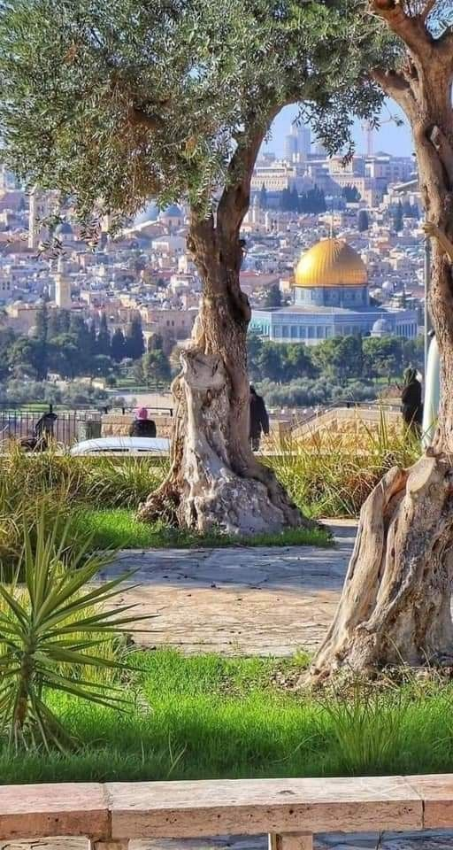

لمحة عن مدينة القدس
تعد القدس من اقدم مدن العالم و تحمل مكانة تاريخية و دينية عظيمة لدى اتباع الديانات السماوية الثلاث
لماذا اخترت هذا الموضوع
اخترت القدس لانها مدينة تجمع بين عراقة التاريخ و قدسية المكان و اثناء تصميم الموقع واجهت تحديات في تنسيق الصفحات باستخدامcss لكن مع بعض البحث و التجربة تمكنت من حلها و تحسين الموقع ليظهر بشكل بسيط و منظم